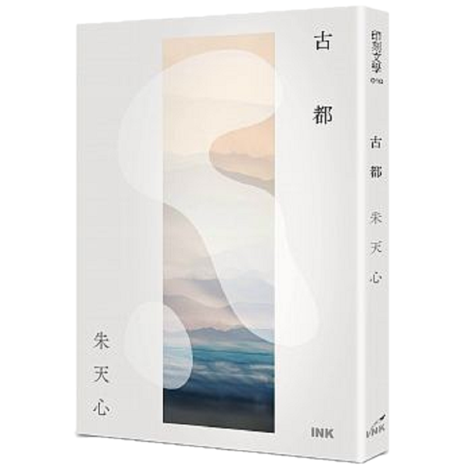

葉子咖啡 X 朱天心《古都》
「我媽說她這輩子最好的朋友就是在大學的時後交到的，為什麼我一點感覺都沒有。」
將最後殘餘的紅茶一飲而盡，高中好友這樣說道，語氣雲淡風輕，比起感傷，更多的似乎是無奈。
「我也這樣覺得。應該是因為他們那個時候沒有智慧型手機吧，也沒有通訊軟體。如果可以跟原本親密的朋友保持聯繫，大學同學之間好像也就沒有交好的理由。」
「尤其是我們還念同一所大學，可以互相陪伴，好像也就沒有真正孤單的時候。大學認識的人就算再怎麼好，好像始終都隔了一層。就像我們真的遇到什麼事情也會第一個想要跟彼此傾訴，其他人也是一樣吧。」
她嘆了一口氣，而我只好露出無奈的淺笑，彼此間的默契不言而喻，但還是不禁感嘆踏出自己的舒適圈，或者是相信一個陌生人，人際關係竟然是這麼困難的課題啊。
「每次聽我媽說起她大學最喜歡的事情，好像就是在冰店還是飲料店跟姊妹念說、聊天、叼牌，消磨一個下午。」
「什麼啊，那其實跟我們常做的事情沒什麼不一樣嘛。」
一樣位於咖啡店林立的溫州街區域，但並非在不顯眼的小巷深處，而是在誠品後面的那條巷子上，與有名的小吃店、甜點店比鄰而居。溫州街的色彩在這裡並不濃烈，相反的，這間咖啡廳有著它自己的靈魂。不是走現在流行的明亮簡約風格，葉子咖啡有著上個時代咖啡廳的文藝、慵懶氣質。以木製為空間基調，不昏暗但也並非明亮，卻帶有一種溫暖的氛圍。一樣是開放式廚房，但只供應著簡單的麵包、飲料、咖啡、蛋糕，店員招呼客人的慵懶態度並不討厭，反而很適合這個空間。店員習慣將杯盤堆疊在櫃檯上再一次清洗整理，雖然以高標準來說衛生條件可能不夠優良，但若果想成是在朋友家作客親切感便油然而生。
有人是這樣形容這間咖啡店的──公館永不凋零的青春葉子──，營業多年的葉子咖啡留下了許多學生成長的軌跡，成為記憶的一部分，一代一代的學生還是來到這裡，一代一代的畢業生也回憶起這裡。喜歡午後配著筆電趕報告的那杯咖啡或花茶，喜歡配著厚片吐司、蛋糕作為話題的佐料，喜歡它願意收留我們這些需要溫暖地方，蝸居公館一角的人到深夜十二點。有人說最近的葉子咖啡失去了它原本的模樣，不再那麼令他喜歡了，但是在初來乍到的我眼中，它還是很可愛的。

記憶的累積與世代的不同，我不禁聯想起最近閱讀過很喜歡的小說，朱天心的〈古都〉。對於她所念念不忘的那個青春回憶裡的台北我可能無緣見識也很難體會，但是她最後選擇以那個亙古不變的京都作為自己故鄉的選擇，卻是耐人尋味也深有感受。
「難道，你的記憶都不算數……」
「大概，那個城市所有你曾熟悉、有記憶的東西都已先你而死了。」
面對這個快速變遷的時代我們該如何自處，土地認同感薄弱究竟是不是我們該反省的問題。我們的一生似乎就是要這樣與時間賽跑，希冀自己在每一刻都能適應時代的細微迅速變化。但我知道葉子咖啡應該會一直在這裡，至少在我還蝸居於公館的這幾年裡，它還是會像朋友家的廚房一般，親近慵懶。
「下次再來吧。」我推開咖啡廳的門，高中好友笑著點頭，踏上腳踏車，往未來的方向騎去，未知卻堅定無比。